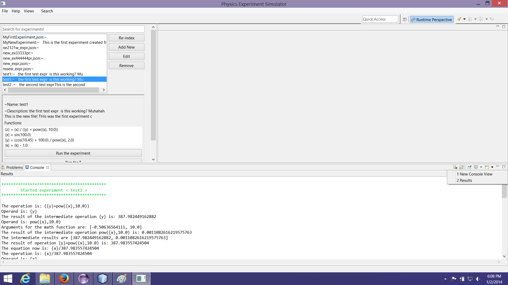

There are two ways of running an experiment:
In order to view the results you need to open the Results
console.
This can be done from the console view, in the following way:
from the bottom right corner select Open Console -> Results

If there are problems at runtime, this will appear in the Problems View